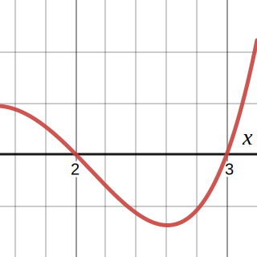
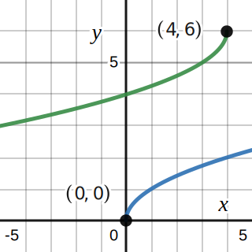
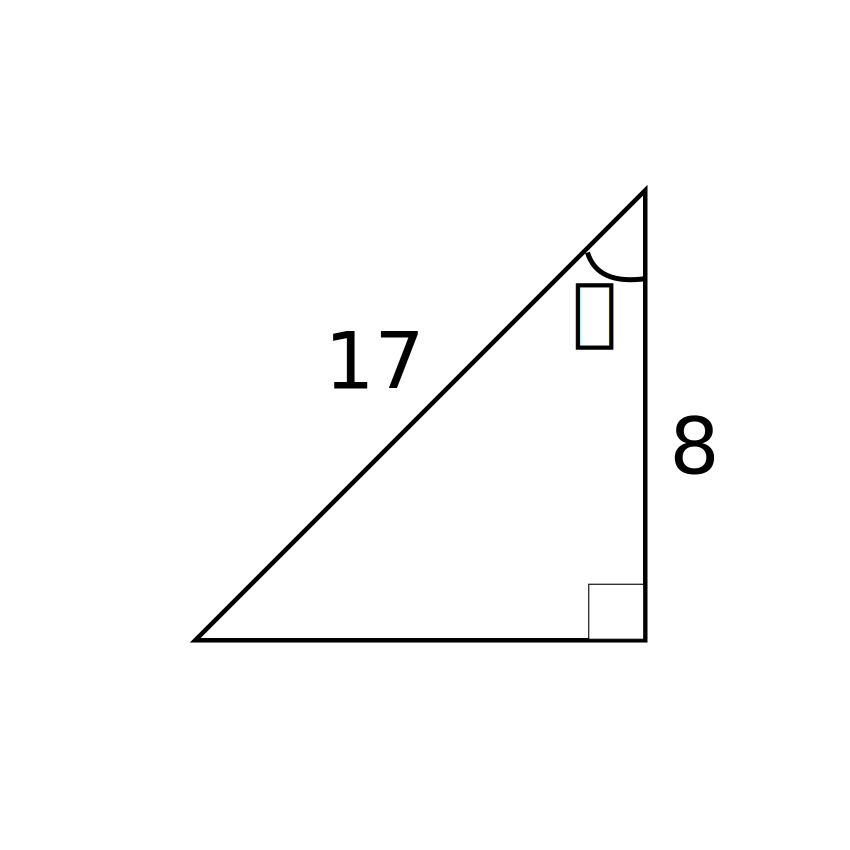

Question 1

The figure above displays the function $f(x)=x^4-5x^3+5x^2+5x-6$ for the interval $[1.5, 3.2]$.
Completely factor $f(x)$ using the plot as a start. Complex numbers don't need to be considered.
For example, if you get a factor of $x^2+9$, you don't need to factor it to $(x+3i)(x-3i)$.
Question 2

The figure above consists of two functions:
Question 3
Consider the following rational function
$$f(x)=\frac{x+x^2-6}{4x+3+x^2}$$
i. Find the horizontal asymptote of $f(x)$
ii. Find the vertical asymptotes of $f(x)$
iii. Find the oblique (or slanted) asymptotes of $f(x)$
iv. Find the holes of $f(x)$
Question 4
$$\log(x+5)-\log(x-3)=\log(x+2)$$
Note: $\log$ without a subscript means the base is 10
Find all real values of $x$ that satisfy the logarithmic equation above.
Question 5
Find the exact value of all 6 trigonometric functions of the given angle $\theta$.
Question 6
Given the following set of numbers: $$19, 11, 20, 2, 2$$ Find the mean, median, and mode.
Question 7
Solve the following system of linear equations $$2x+3y=10$$ $$30y=100-20x$$